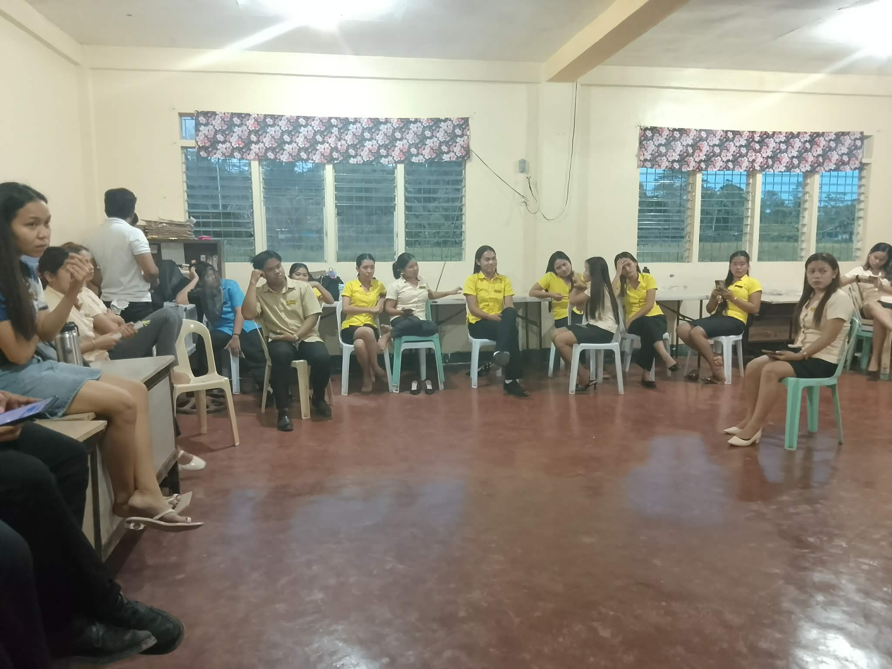
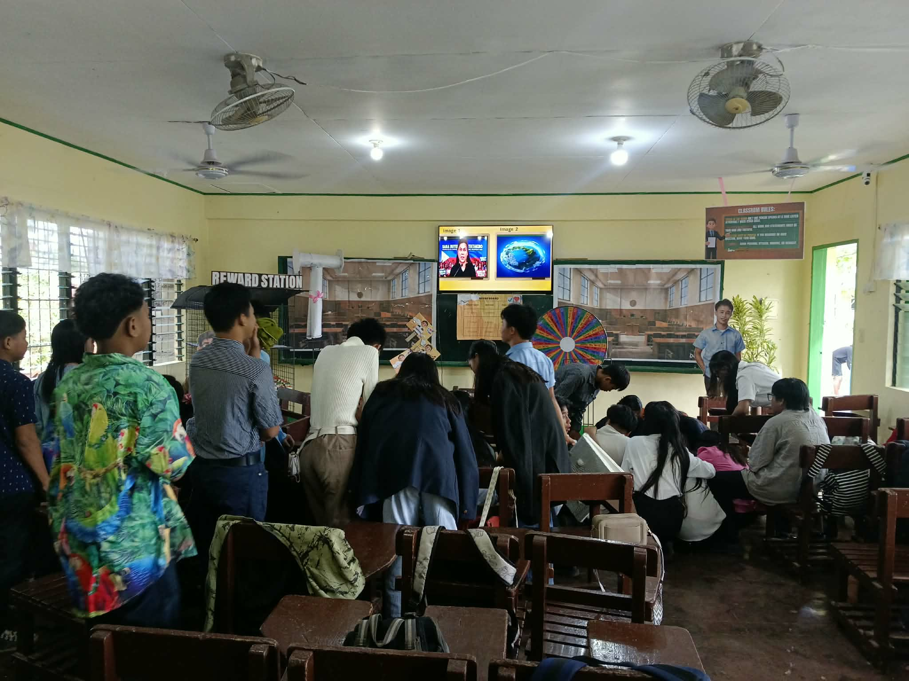
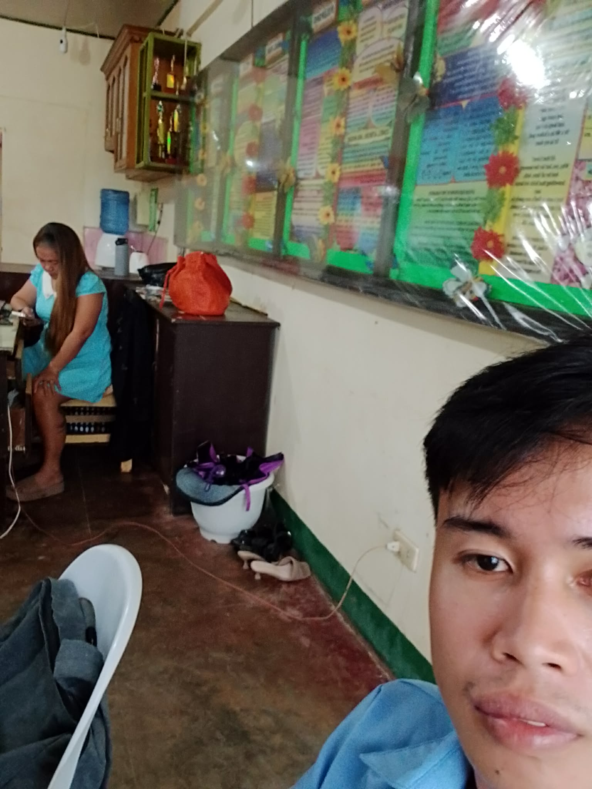
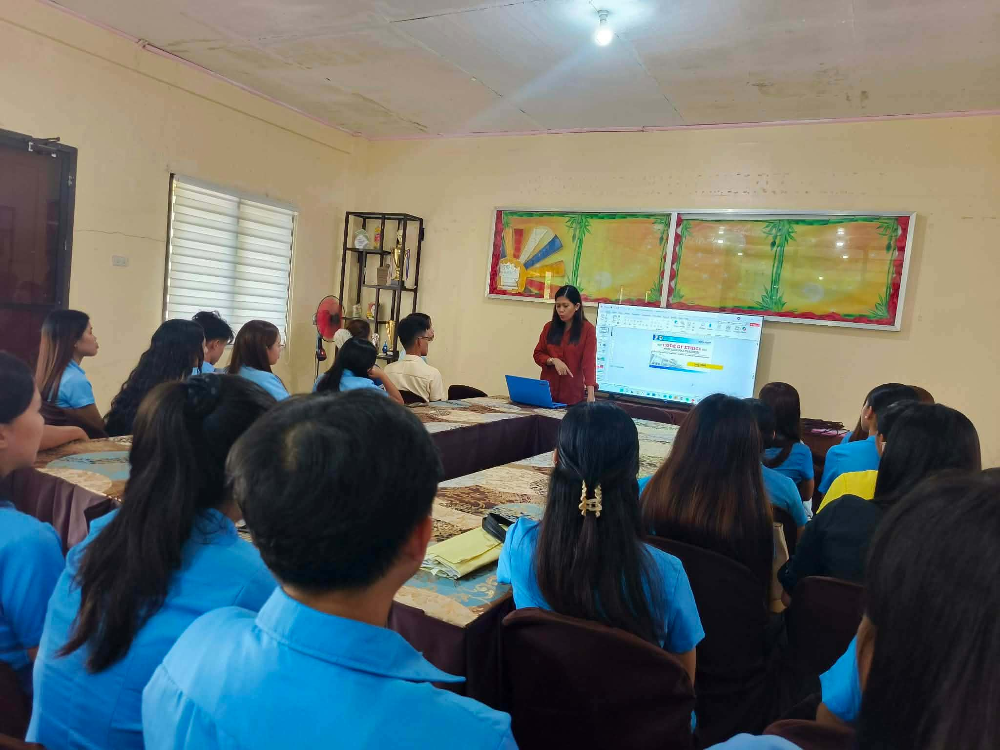
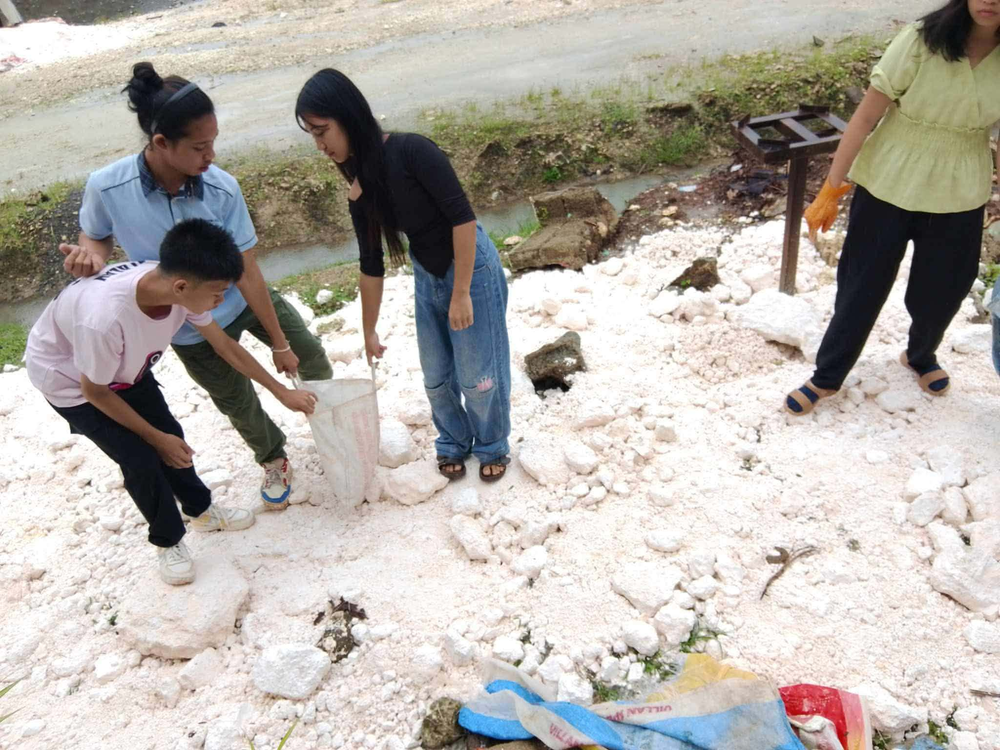
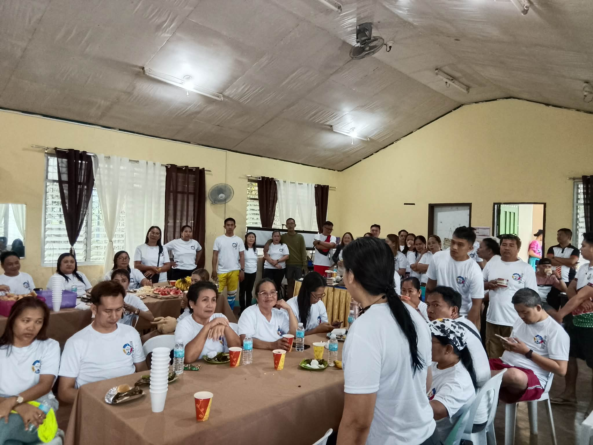
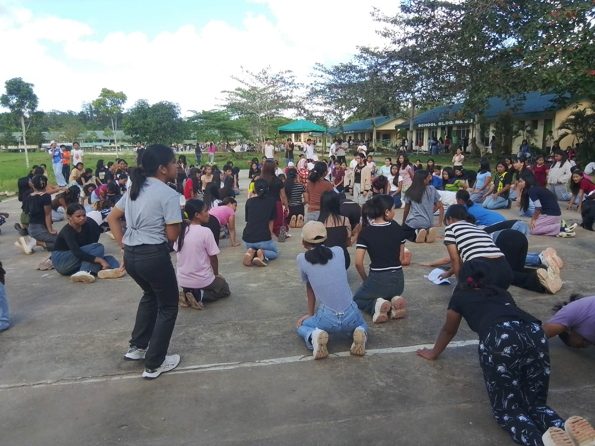
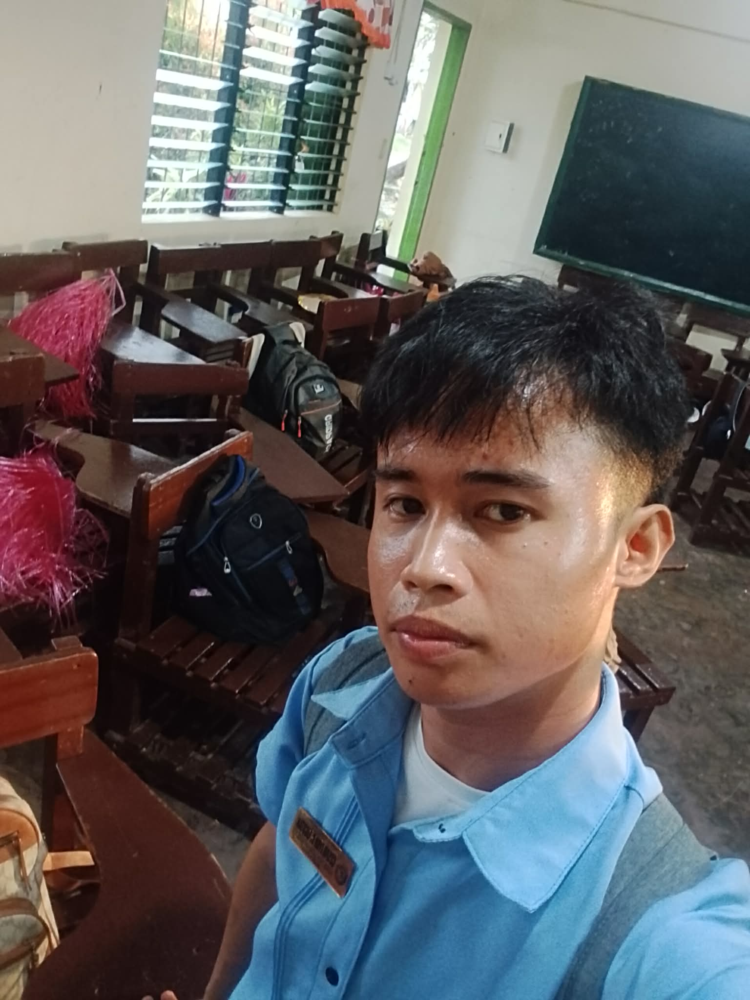
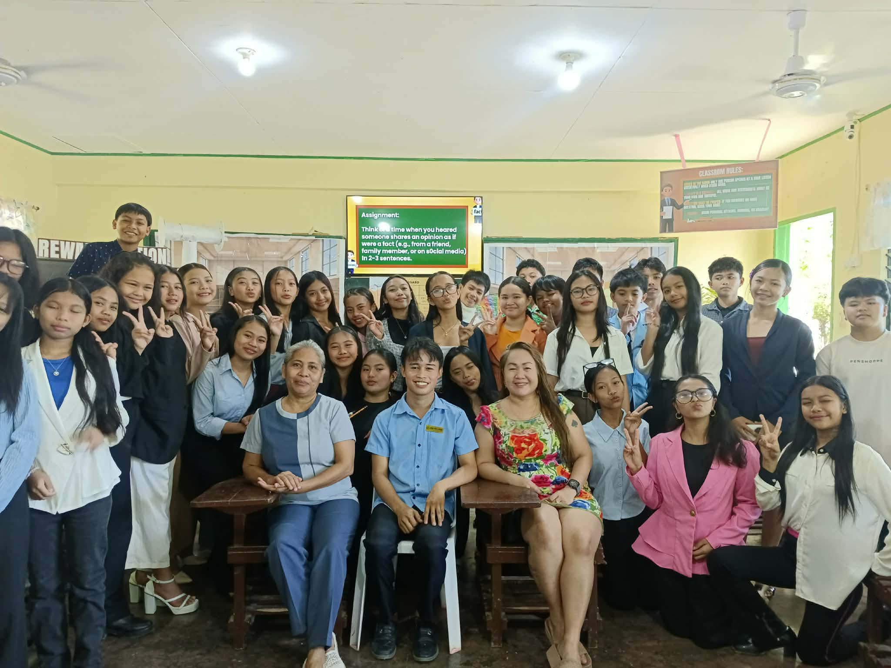
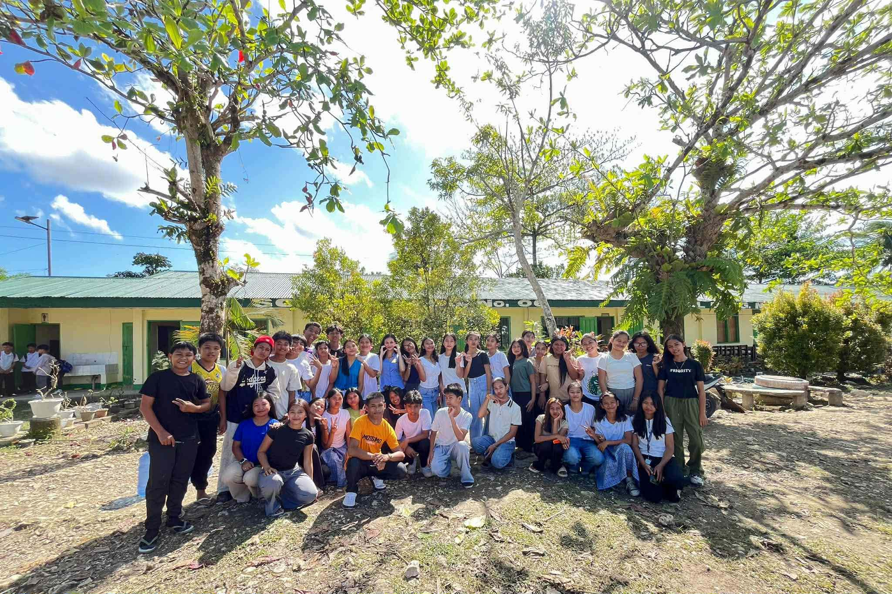

Week 1
During our first internship orientation, we were gathered together with our Assistant Principal, Sir Jorien Jalalon. He discussed the essential laws, policies, and guidelines that we must follow throughout our training. He emphasized discipline, professionalism, and responsibility as student interns. This orientation also gave us a chance to meet our Cooperating Teachers and begin building professional relationships. We were able to ask questions and clarify expectations regarding our duties in the school. Overall, the experience helped us understand the structure of our internship and prepared us for the challenges and responsibilities ahead in our journey as future educators overall growth.

Week 2
My Cooperating Teacher, Ma'am Maricel Ballentos, entrusted me with a significant responsibility. She assigned me to handle her four English classes. Taking on these teaching loads was a big step for me, as it meant I would be fully responsible for delivering lessons and guiding students in their learning journey. It was both exciting and challenging, but it gave me the opportunity to apply what I have learned and grow as a future educator. This experience allowed me to step into real teaching practice, build confidence, and develop my skills further as an educator in my teaching journey ahead growth.

Week 3
When Ma'am Maricel Ballentos reviewed my lesson plans, she provided constructive feedback that helped me improve significantly. She commended the parts that were well-written, particularly the objectives and activities, noting they were clear, relevant, and aligned with learning competencies. She also appreciated the effort I put into preparing instructional materials. However, she pointed out areas where I could do better. She advised me to allocate time more realistically to ensure the lesson flows smoothly without rushing. She also suggested making the evaluation part more comprehensive to assess student understanding of the topic. Her guidance helped improve lesson planning skills.

Week 4
After being absent for a few weeks due to important matters, our principal, Ma’am June Havana, finally called us for a brief orientation. She discussed the concept of Social Adequacy and explained its relevance to our internship journey. She clearly explained its advantages and disadvantages, helping us understand both its positive and challenging aspects. The session was informative and gave us a clearer understanding of how to apply these insights during our training. Overall, the orientation helped us appreciate the importance of balancing benefits and challenges in our internship and guided us in applying the lessons effectively in practice.

Week 5
Aside from classroom instruction, my Cooperating Teacher, Ma’am Maricel Ballentos, assigned me tasks involving community service and school maintenance. She instructed me to guide the students in gathering limestone rocks needed for school projects and beautification efforts. Afterward, I led the class in cleaning and organizing our designated area, focusing on keeping the front yard neat and presentable. This experience allowed me to bond with my students outside academics while also instilling discipline, hard work, and responsibility in maintaining our school environment. It was a meaningful activity that helped me appreciate the value of cooperation and active participation in school improvement.

Week 6
I was given the opportunity to extend my help beyond the classroom by assisting the teachers during the Fun Run held in celebration of the anniversary of Data Lipus Makapandong National High School. I helped facilitate the event through food preparation, coordinating with participants, and ensuring that the activities ran smoothly. It was a wonderful experience to be part of such a meaningful celebration. It also allowed me to build good rapport with the faculty and staff while contributing to the success of the school’s special occasion as well.

Week 7
I was given a special responsibility when Sir Cinco appointed me as the assistant choreographer for the Grade 8 level. It was a great opportunity where I taught dance steps, guided the students in mastering their routines, and ensured that their movements were synchronized and well-executed. Aside from the practice sessions, I played a role during their final performance. I assisted them backstage, managing the flow of students and ensuring everyone was in the right place and position before entering the stage. Fulfilling to witness their hard work pay off and my guidance helped them deliver a confident and successful presentation.

Week 8
As I prepared for my Grand Demonstration Teaching, I dedicated significant time and effort to every aspect of the process. I crafted my lesson plan, created colorful and effective instructional materials, and spent hours studying and mastering the content to ensure smooth delivery. Aside from the physical preparations, I had meaningful consultations with my Cooperating Teacher. We discussed strategies I should apply and things I should avoid during the actual teaching. Her guidance gave me clear direction and helped me feel confident and ready to face the challenge. Overall, the experience strengthened my confidence in teaching practice and professional growth.

Week 9
After pouring so much time, effort, and dedication into my preparations, the much-awaited day finally arrived, and I successfully conducted my Grand Demonstration Teaching. I was able to put all my plans into action and deliver the lesson with confidence, effectively using the instructional materials I had prepared and applying the strategies and techniques I had practiced. Seeing everything flow smoothly from the beginning of the class up to the evaluation gave me a deep sense of fulfillment. It was a truly memorable moment that marked a significant milestone in my journey as a student teacher, proving that all my hard work had truly paid off.

Week 10
Even after successfully finishing my Grand Demonstration Teaching and as the day was coming to an end, I made sure to make it extra unforgettable before leaving. I took the opportunity to spend quality time with my students. I gladly assisted them with their preparations for their closing ceremony pictorial, helping them fix their attire, arrange their positions, and ensure that they looked their best. It was a heartwarming way to end the day, as it strengthened our bond and showed them that I care for them not only as their teacher but also as someone who supports them in every moment.
Week 11
After all the hard work, lessons, and memories shared together, the much-awaited moment finally arrived—graduation day. Seeing them dressed in their togas, looking proud and happy, made me feel incredibly emotional and fulfilled. Witnessing them reach this significant milestone in their lives was a truly priceless experience. It was a beautiful celebration of their success, and I felt honored to have been part of their journey. I was grateful to have guided and supported them until the very end, knowing that in my own small way, I contributed to their growth and achievements as students.